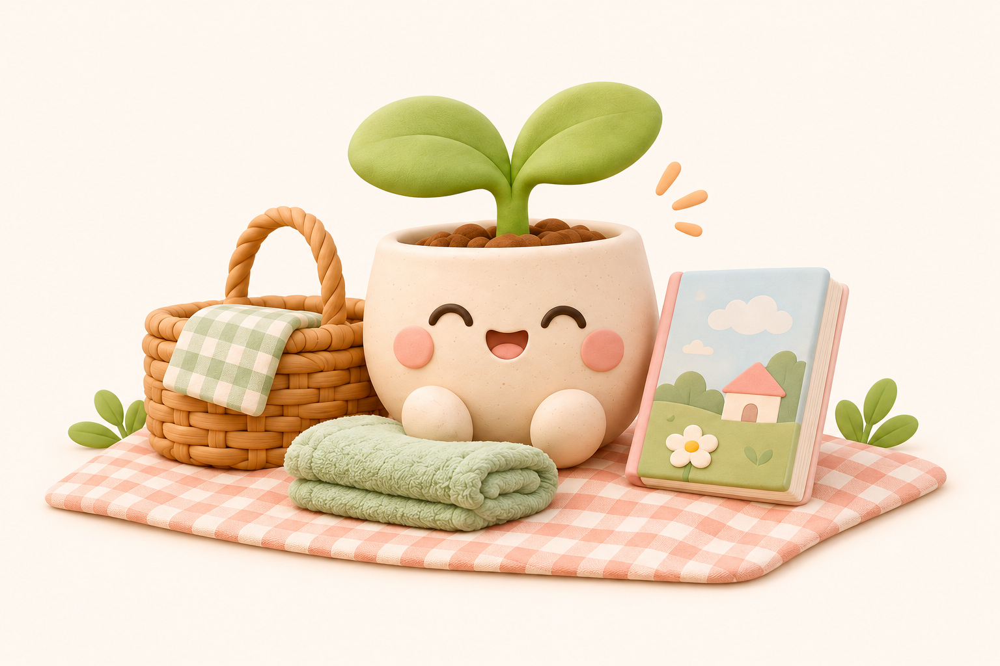

Banyak peran.
Banyak cerita baik.
Perawatan, keseharian, dan ide kreatif
dalam satu ruang.

Lagi cari apa?
Dari highlight @renamardi. Detail, ketersediaan, dan jadwal perlu dikonfirmasi kembali.
Perawatan, keseharian, dan ide kreatif
dalam satu ruang.

Dari highlight @renamardi. Detail, ketersediaan, dan jadwal perlu dikonfirmasi kembali.